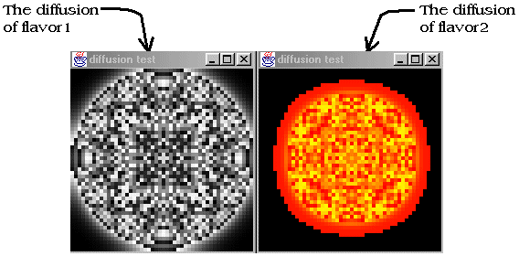

Figure 11. two patch variables views at the same time

This simulation was made in order to test the diffusion of the patch variables in the environment. At the beginning of the simulation the values of the center patch's variables are settled to a big number.
You can set the diffusion and evaporation coefficients and the value of the center patch of each patch variable (flavor and flavor2) in the Launcher's properties box (Diffusion). So you will obtain different effects during the simulation.
This little demo shows how to initialize and use patch variables: the Flavor class. These jobs have to be done in the Launcher code in the initializePatchVariables like in the following example.
protected void initializePatchVariables()
{
PatchVariable a = new PatchVariable("flavor");
a.setDiffuseCoef(valueDiff);
a.setEvapCoef(valueEvap);
addPatchVariable(a);
PatchVariable b = new PatchVariable("flavor2");
b.setDiffuseCoef(value2Diff);
b.setEvapCoef(value2Evap);
addPatchVariable(b);
} |
To view these two diffusions independently, we have made two specials viewers classes: FlavorViewer and FlavorViewer2. In each Viewer we have just overridden the paintPatch method in order to make the flavor's concentration visible on the screen.
public class FlavorViewer extends Viewer
{
public void paintPatch(Graphics g, Patch p,int x,int y,int CellSize)
{
int a = ((int) p.getFlavorValue("flavor"))%256;
g.setColor(new Color(a,a,a));
g.fillRect(x,y,CellSize,CellSize);
}
} |
Moreover we have used an Observer, GridInitializer, to setup the center patch at the beginning of the simulation overriding the setup. Note that in this simulation there is no turtle.
public class GridInitializer extends Observer
{
double val,val2;
public GridInitializer (double v, double v2)
{
val = v;
val2 = v2;
}
public void setup()
{
patchGrid[(int) (envWidth/2)][(int)(envHeight/2)].setFlavorValue("flavor", val);
patchGrid[(int) (envWidth/2)][(int)(envHeight/2)].setFlavorValue("flavor2", val2);
}
} |